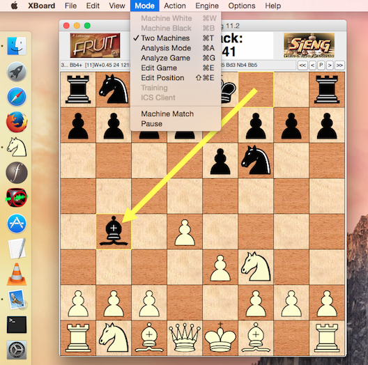
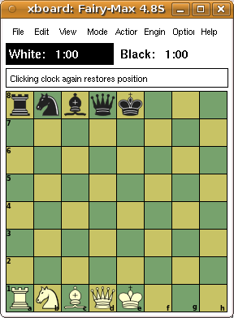
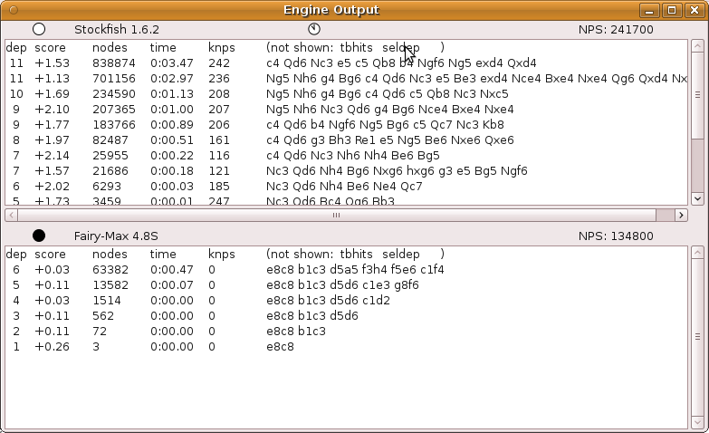
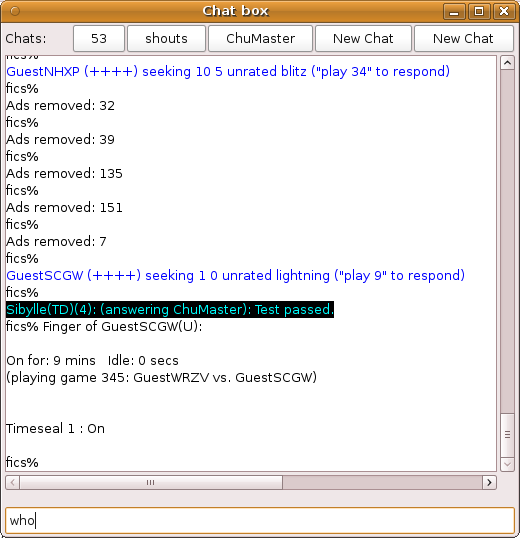
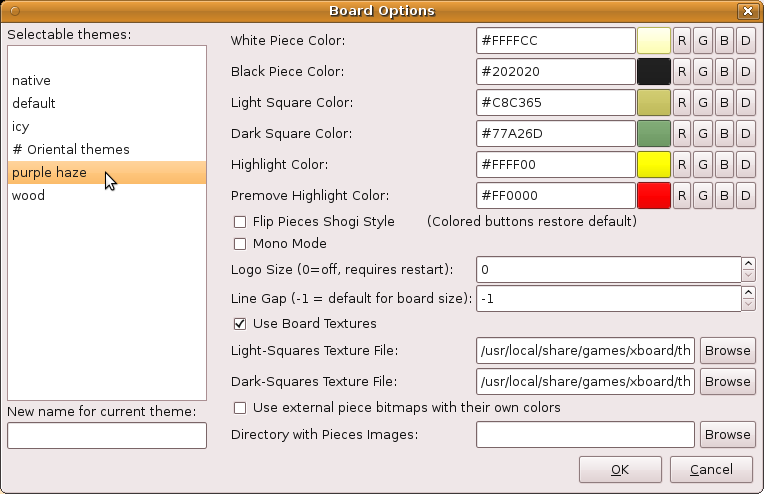
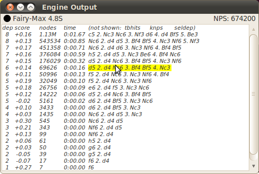
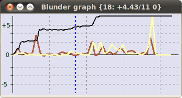
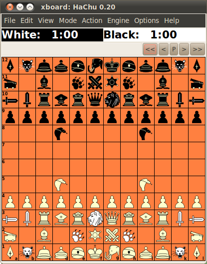
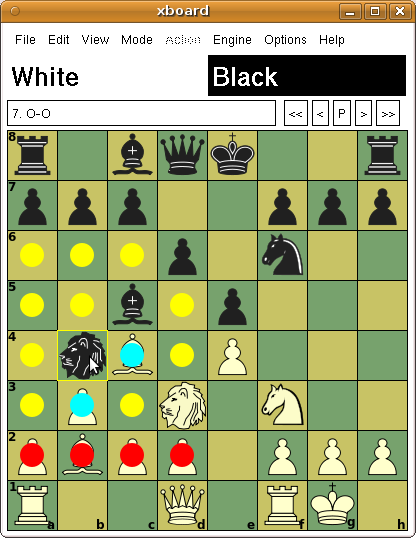
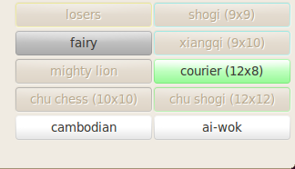

What is new in WinBoard / XBoard 4.8.0?
|

|
A stable GTK build and an OS X version
With XBoard 4.8.0 the GTK build can be considered as stable as the Xaw build.
In some areas it might not be perfect yet in all areas,
but in other areas, such as the ICS Interaction window,
it is already developed beyond the Xaw version,
and the GTK build is in general superior to the obsolete Xaw interface.
The GTK build can also be interfaced with OS X through the GtkOsx library.
So OS X is now amongst the officially supported platforms,
and a special configure option is available to build XBoard as OS X App.
|
The following features are new in XBoard 4.8.0:
When a (local, i.e. non-ICS) game still in progress is interrupted and saved,
e.g. because you use the 'Abort' menu item, or close XBoard,
it now saves the clock settings of white and black in the result comment.
When you load an unfinished game with such saved times in it,
it automatically restores the clocks to the values that were saved.
This makes it easier to resume such a game.
|
In Edit Position mode the board can be cleared by clicking on the clock, or through a piece-menu item.
Upto now this irreversibly destroyed whatever position existed before.
This has now been changed:
by repeatedly issuing the clear command, the position can be made to cycle through the states
old position, empty board, 'piece palette', initial position, old position, etc.
This makes it possible to recover from an accidental clear command.
The 'piece palette' position has each back-rank piece occurring exactly once,
removing all duplicates from the initial position.
So for orthodox Chess only the pieces on a1-e1 and a8-e8 stay.
The idea is that this is a much more convenient starting point for setting up arbitrary poitions than an empty board:
the pieces that were left can be used as a kind of tool bar from wich you can draw the pieces you need,
to put them in the desired place.
Pieces that you don't need can be dragged off board to get rid of them,
pieces you only need once can be simply moved to the desired location,
and pieces you need twice can be duplicated by moving them with the Ctrl key pressed.
Pawns, finally, can be created by static right- or middle-clicks on the squares were you want them
(pressing Shift to swap the colors for those who do not have a middle mouse button, as usual).
The 'piece pallette' thus is an especially convenient starting point for setting up positions with an intermediate number of pieces,
where you would have to 'create' too many pieces when starting from an empty board,
and remove too many when starting from the initial position.
Clicking an already selected piece a second time in Edit Position mode used to make it disappear.
This was more an annoyance than a feature, as it often happened by accident,
and it then required multiple mouse clicks to get the piece back.
There are plenty of other ways to remove a piece, like drawing it off board,
or moving an empty square on top of it.
So the second click on a piece is now used as a signal to promote or demote it,
which is very useful in Shogi-like variants, where all pieces can promote,
but the promoted versions are usually not present in the 'palette',
as the latter is derived from the opening position.
|

|
In the late end-game (with 5 or fewer men on the board) of orthodox Chess
there are nowadays tables available that show whether the game can be won against best defense (bitbases),
and sometimes even how (tablebases).
Engines that use tablebases can play instantly in such won or lost positions,
as they can just play the best move indicated in the tablebase without any further search.
When they get into a position that is a theoretical draw, however, they might still think as long as always.
The tablebase does not make any distinction between draws that are 'nearly won' and those that are 'nearly lost',
so that just playing one of the moves listed as draw will quickly blunder away
any chances the engine might have had to win against imperfect defense.
E.g. in a KBPPKB draw with unlike Bishops, the tablebase would not tell the engine that sacrificing BPP on the first 3 moves is not a good idea.
So it is important to give the engine some time to select the reasonable drawing move and reject pointless sacrifices,
in order to keep a fallible opponent under pressure.
Very deep searches are hardly helpful, however, as the tablebase already guarantees us there is nothing to find.
Just not blundering away material, and striving for good mobility, centralization and advancing of passers,
while hoping for an opponent blunder
(which the tablebase will then of course immediately recognize as a win)
is usually sufficient.
It is especially very annoying when two engines, both using tablebases,
so that you know they can never blunder away the draw,
don't want to agree to the inevitable draw (because of their contempt setting),
but go on for 50 moves (or several times 50 moves, when they can drag it out with Pawn moves)
in a futile attempt to swindle their opponent
XBoard now has an option to avoid this,
without corrupting test results for engines that do not use tablebases
by awarding them wins they would never be able to find themselves,
(just because XBoard's tablebase says they are wins),
or awarding them draws that they would not be able to hold on their own.
This new option -first/secondDrawDepth N can be installed with engines that use tablebases,
to limit their search depth to the given N, and thus speed up their play to near instancy (e.g. with N=3).
This should not hurt them, as their use of tablebases guarantees they will never lose the draw,
and never miss a win after an opponent blunder.
When two such engines, both installed with the option, reach a drawn position,
the game will end almost instantly, by playing as many moves as needed to reach a 50-move or repetion draw.
If only one of the engines uses tablebases and is installed with the option,
that engine would play instantly the drawing move that is best according to its 'intuition',
but the other engine would be forced to prove its worth,
by showing it can find the moves to secure the draw.
And when the latter engine is in a won position, the option would be ineffective,
but the tablebase user should be able to instantly play the best defense anyway,
letting its opponent show he is able to win against that.
To allow the option to work, XBoard can now interface to Scorpio bitbases.
To this end it must know the path to the bitbase files,
defined as "scorpio:PATHNAME" as (comma-separated) element in the -egtFormats option.
In WinBoard this option can be set through the "Nalimov path" textedit in the Common Engine Options dialog
(and will be distingushed from a true Nalimov path by the "scorpio:" prefix).
When the list of -egtFormats includes a "scorpio" specification,
the DrawDepth options will cause them to be probed when there are 5 or fewer orthodox Chess men on an 8x8 board,
and an 'sd N' command will be sent to the corresponding engine just before it receives a move,
in order to retrict its search depth.
XBoard used to preceed the PVs printed by the engines always with 4 colums:
search depth, score, time and number of nodes searched.
The protocol specs have now been extended to allow engines to also send selective depth, speed (knps) and tablebase hits,
and for engines that send those, there can now be 7 columns of numeric data before the PV in the Engine Output window.
(And because the latest Polyglot implements this protocol extension, this will include all UCI engines!)
|

|
It can be annoying to have so many columns eating away space for the PV, however.
Especially with data you might not want to see, or the engine might not even print.
So and option -memoHeaders has been added with which you can print headers above the columns.
Right-clicking these headers can then show or hide the corresponding column.
Only the depth and PV will always be displayed.
|
XBoard always printed the communication with the ICS in the terminal from which it was launched.
This x-terminal allowed colorization of the ICS messages by kind,
something that was not possible in the Athena widgets of XBoard's own dialogs.
In GTK it is possible to color text line by line in a text edit, though.
So XBoard now also displays this text in a dialog of its own.
Once this feature is fully developed, the x-terminal will be abandoned.
The solution that has been chosen combines the ICS Input Box,
the Chat Window and the new ICS Output widget into a single window.
Normally this will contain a large output pane to display the (colorized) ICS output,
with an input field (the old ICS Input Box) below it.
Anything you type there will then be sent to the ICS.
There is a row of buttons at the top of the window, however,
which you can use to open a Chat.
Pressing them divides the window into two panes,
the ICS output going to the upper one, while the lower one will be dedicated to one particular chat.
The Chat Partner can then be entered above the chat pane (a player name, channel number or message type),
after which all messages from that source will be diverted to that pane.
The Input field at the bottom of the window will be sent as a message to the designated Chat partner
(prefixed with the appropriate tell, xtell or shout command).
To give ICS commands again, you will have to hide the Chat pane by pressing the Hide button above it.
You can assign five dedicated chat windows this way,
navigating between them with the buttons at the top of the window.
If there is activity in one of the windows that is not currently displayed,
the corresponding button will turn orange.
This new ICS Interaction window can be controlled from the keyboard:
Typing <Tab> in the input text entry will navigate between busy chats
(opening the chat pane if necessary)
starting with those that have been active since you last saw them.
Typing <Esc> wil hide the chat pane, so you can start entering ICS commands.
If the chat pane was already closed, it will transfer focus to the board window,
so you can exercise menu functions by typing accelerator keystrokes.
Typing printable characters when the board has focus will automatically
transfer that focus to the input field of the ICS window again,
making it pop up if necessary.
(The latter can be controlled by the option -autoBox true|false.)
Typing Ctrl-N will navigate to an idle chat (or chat nr 5 if there is none),
giving focus to the 'Chat partner' entry so you can assign it.
Typing Ctrl-O will similarly navigate to an idle chat,
automatically assigning it to the origin of the latest message you received in the ICS pane,
allowing you to easily answer it.
The ICS pane has a context menu similar to WinBoard's:
when you right-click a word in it, the ICS Text Menu dialog pops up under your mouse,
and you can select commands from it that would automatically incorporate the clicked word.
Such as challenching a person, opening a chat for a person, channel or shouts.
Note that the ICS Text Menu is user-configurable through the -icsMenu option
in your ~/.xboardrc file.
The general handling of chats has also been improved a bit:
broadcasts by a person will also appear in a private chat you have open for that person,
clearly marked as broadcasts.
That will not suppress the appearance of the broadcast in the chat
you have open for that channel, or the ICS pane.

|

|
The View->Board dialog of XBoard allowed the user to interactively set piece and square colors,
define board textures or alternative piece images, and other graphical board roperties.
But if many settings had to be changed in order to, say,
change from a theme suitable for Chess to one for Xiangqi,
the user had to do that for each of them separately.
In WinBoard an entire set of properties defining the board look could be saved as 'theme'.
XBoard now also has that feature.
The themes are saved in the settings file as a persistent multi-line option -themeNames,
and will be displayed in a listbox that has been added to the View->Board dialog.
The user just has to click a theme name there to recall all settings defining that theme.
New themes can be created by defining a name for it in a textedit under this listbox,
and OK-ing the dialog when such a name has been entered saves the currently specified board look as this theme,
so that it can be recalled from the listbox later.

XBoard already supported the possibility to play moves from the Engine Output window
in analysis mode, by right-clicking on the PV they were part of.
This was integrated with the possibility to walk through the PV
by moving the mouse with the right button kept down,
using the main board as a 'variation board'.
This way you could even play a number of moves of the PV.
The PV-walk in analysis mode started at the position after the first move of it,
so that a static click would play that move.
If you would move to another position along the PV before releasing the button,
then all moves upto that position would be played,
and analysis would continue there.
This could be a bit confusing for people that often wanted to walk through alternate PVs.
(To walk the latest PV you can right-click the board, which never plays a move.)
They would have to make sure to return to the start of the PV before releasing the button,
in order not to play unwanted moves.
Therefore the 'auto-extend' option could be used to disable this feature.
This control over when to add moves as a result of PV clicking has now been improved:
In WinBoard the auto-extend option can be set interactively from the General Options dialog.
Furthermore, playing of move(s) is only ever done when you clicked the first move of the PV
(or the data left of it).
When you click the remainder of the PV,
you can walk it without having to worry whether this will alter the position.
The Edit Book window now has a similar feature:
right-clicking a move from the displayed list of book moves there
will now also cause the move to be performed.
It now also has the reverse feature:
with a button in this window you can tell XBoard that
the next move you are going to play on the board should not really be played,
but added to the book (with a default weight of 1).
|
So far the font options were ignored in XBoard's GTK build.
Now their number is even expanded:
next to the existing -clockFont, -messageFont and -coordFont there are now
-icsFont, -tagsFont, -commentFont, -moveHistoryFont and -gameListFont.
Font specifications are not compatible between Xaw and GTK;
for the latter they have to be described by names like "Sans Normal 10"
or "Monospace Bold 8".
To let XBoard pick a font size it considers suitable for the board size,
use %d in stead of a hard number (like "Sans Italic %d").
The icsFont is used in the ICS pane of the ICS console, and should be a mono-spaced font.
The moveHistory font is used in the text memos of both Move History and Engine Output dialog,
to give you the opportunity to use a figurine font in those
for displaying the moves that are printed there.
The gameListFont is used in the listbox of the Game List;
when you often use large PGN files you might want to have an extra small font there.
The messageFont currently only affects the row of widgets directly above the board:
the message field where the latest PV is displayed,
and the buttons of the button bar to navigate through the game.
It must be used to prevent these from dominating the width of the board window
at small square sizes.
The tagsFont and commentFont similarly affect the text memos in the
Edit Tags and Edit Comment dialogs, and are mainly supplied because WinBoard has those too.
|

|
WinBoard already had this, but in XBoard you can now also use the mousewheel
to step through the current game,
when the mouse pointer is above the board, irrespective of whether it has focus.
(This according to GTK custom; in WinBoard it would work when the board had focus,
irrespective of where the mouse was pointing.)
|

|
A new mode of displaying engine analysis of an entire game has been added,
the so called blunder graph.
In this mode the Evaluation Graph does not display the evaluations itself,
but the difference in evaluation on subsequent moves.
(This only makes sense when the evaluations come from the same engine,
such as after the use of Analyze Game.)
This way poor moves, which cause a jump in evaluation, stick out more visibly.
|
To toggle between normal evaluation display and blunder graph,
you can right-click anywhere in the Eval Graph window.
(Left-clicking still brings you to the move you click.)
The mouse wheel can now be used on the Eval Graph to zoom the [-1, 1] score range,
which formerly would allow only non-interactive control through the -evalZoom
command-line option.
There is a new item in the File menu: Save Selected Games.k
This will cause all games currently selected for display in the Game List
(through applying a text filter, or using the Find Position button)
to be appended to a file.
The number of pieces in the final position has been added as a search criterion.
The 'Save Games as Book' function will now also only take the games
selected for display into account.
This should offer you more control over what you include in the book.
To efficiently use engine, e.g. being able to select them from the Load Engine dialog's listbox,
or as tournament participant, the engine had to be first installed in XBoard's engine list.
Just installing the engine package on your machine was not enough.
This has now been changed, with the aid of a new Linux standard for 'AI plugins'.
Engines compliant with this standard will install a tiny file to announce their presence
in a system's standard plugin directory for the communication protocol they understand.
GUIs that support that protocol can then hunt for new arrivals there,
and the file will contain the essential info needed to run the engine.
(E.g. the command needed to launch it for use with that protocol.)
XBoard now has a persistent string option -autoInstall, which activates this feature when set to a non-empty string.
Any time XBoard is launched it will then examine the contents of the plugin directories for XBoard and UCI protocol,
and if it finds any engines there newer than the the persistent settings file
(meaning this user sees them for the first time)
it will add the required command to its engine list.
In the future the standard will be further developed so the plugin files will also contain information
on what variants the engine plays,
so that the user can filter these automatic installs by the value set for the -autoInstall option.
E.g. -autoInstall "shogi,xiangqi" would only automatically install new engines that play Shogi or Xiangqi,
and ignore engines that play only Chess.
XBoard also supports a new standard for engine logos:
engine packages can install a png image derived from their name (e.g. fairymax.png)
of their logo in a standard plugin-logos system directory.
XBoard's -autoLogo option now also searches for engine logos in those standard places,
after having tried the configured -logoDir and the directory specified for the engine
(with -fd or -sd options; it searches for a file named logo.pgn there).
For user logos it will also try ~/.logo.png.
New variants and general variant support
ASEAN Chess is a synthesis of Makruk and other South-East Asean Chess variants.
It is very similar to Makruk, the main difference being that the count rules are simpler
(but WinBoard did not implement these anyway),
and that promotion is only on last rank.
This is now added as a new supported variant to XBoard.
Chu shogi is an ancient form of Japanese Chess on a 12x12 board, which was already documented in the year 1250.
It has been the dominant form of Chess in Japan for many centuries, and is still quite popular,
although it has been overtaken in popularity by the 9x9 game with piece drops in recent times.
As there are no piece drops in Chu Shogi, it has a much more Chess-like feel than the modern game.
|
Like other large Shogi variants, Chu Shogi is characterized by a very large number of piece types.
Not only are there 46 pieces (12 of them Pawns) of 21 different types in the initial setup,
but almost all pieces promote on reaching the last 4 ranks, often to pieces that move differently from all initially present pieces.
(And even if they move the same, they are formally still different piece types, as they cannot promote a second time.)
To implement a game with so many piece types in XBoard was a challenge,
as upto now XBoard supported only 22 piece types (11 'basic' types, asn 11 promoted types).
This has now been extended to 44, Chu shogi considering all 22 existing types as 'basic',
and adding 22 new 'promoted' types.
(Not all of those are needed in Chu shogi, though, so they don't have all been assigned new piece graphics.)
A Chess-like representation was chosen, to make it possible to use the existing piece symbols.
(The Japanese of course play this game with kanji pieces,
which are also available for XBoard in SVG format.)
Another issue was the Lion piece, which has a special two-step move,
not uniquely characterized by a from- and to-square, but also needing an intermediate square,
where it can capture a second piece in an en-passant-like fashion.
This required quite some enhancements in XBoard;
more about that below.
Although XBoard is aware of all the piece moves,
it does not implement the more subtle details of the Chu Shogi rules,
and has to on the engine (e.g. HaChu)
for more accurate judging move legality and highlighting target squares.
So it is advisable to play this game with legality testing off.
|

|
|

|
To make the Chu-Shogi Lion a bit more accessible to Chess players,
a newly designed variant 'Mighty-Lion Chess' was added to XBoard.
This uses the Lion as the only unorthodox piece added to the FIDE game,
so that it is possible to enjoy an introduction to this piece without having to learn about the plethora of new pieces in Chu Shogi.
In this variant the Knights on the Queen side are simply replaced by Lions.
The simplest way to view the Lion is as a piece that moves as a King, but then twice per turn,
freely changing direction between steps.
And if such a two-step path would be blocked, it can jump to the final square directly.
This way it has 24 unblockable moves.
It can capture something in each of its steps, so upto two pieces per turn:
one in the conventional way, but the other by passing through it, leaving the square empty.
It could, however, also elect to make only a single step.
XBoard highlights the squares from which a continuation step would be possible in cyan, when you pick up the Lion.
(It is essential that the option 'Show Target Squares' is on in this game.)
If you put down the Lion on such a cyan square, XBoard will not consider that the final destination,
but remembers it as a square the Lion should pass through,
and highlights the squares you can reach with the second step.
Clicking on one of those (which might include the clicked cyan square) then finishes the move.
Like in Chu Shogi there are rules against trading the Lions
(to prevent you would quickly be left with a game of normal Chess).
Basically they forbid two Lions to be captured in consecutive half-moves:
a Lion cannot capture a Lion if recapture is possible,
and when a non-Lion captures a Lion the opponent Lion is invulnerable ('iron') on the next half-move.
That makes trading the Lions away a very uncommon occurence.
For those that want even more excitement:
the same Lion piece also features in the newly added Elven Chess,
next to three other new pieces on a 10x10 board.
|
With the option 'Show Target Squares', XBoard can be made to mark board squares where the 'lifted' piece can move to
by fat yellow (non-captures) or red (captures) dots.
This obviously can only work when XBoard knows the rules for moving the pieces,
i.e. when legality checking is switched on.
When the latter is switched off, XBoard cannot know how the pieces move
(as the only reason to switch it off would be that pieces do not move as XBoard thinks they should,
to prevent move being rejected as illegal),
and this feature does not work.
There now is the possibility to restore this functionality with the help of an engine.
Engines of course always will have to be fully aware of the rules of the game they play
(or they would play illegal moves themselves).
So they also know where a lifted piece can move to.
Problem is that upto now they would not know which piece is lifted,
as XBoard only sends them the move after the piece has been put down again.
To remedy this, an extension of the communication protocol has been defined.
Engines that want to make use of this new feature can inform the GUI of this by sending a new 'feature heighlight=1' at startup.
The GUI will then inform them any time the user grabs a piece for dragging (or selects it by a static click),
by sending it a 'lift' command with the square coordinates.
The engine can reply to this command with a 'highlight' command, which specifies which board squares have to be marked
with colored dots, of eight different colors.
When the engine does this, the GUI can use the markers to decide if the move the user makes when he puts the piece down is legal,
without first sending it to the engine and wait if it is rejected or not:
any move that does not land on a marked square will be considered illegal.
But the color of the square the piece lands on will be used to trigger special GUI actions.
E.g. moving to a purple square will make the GUI assume the move is a promotion,
and invoke the promotion popup (or trigger sweep promotion),
even when it would otherwise not think so.
This way engines can more flexibly implement variants the GUI knows nothing about,
by modifing the GUI behavior through the color markers.
Another feature helpful in implementing strange variants is the 'click' command an engine can send to the GUI.
This command will contain square coordinates, and the GUI should react to it as if the user would have clicked on the mentioned square.
The engine can use this in response to the 'lift' command to implement one-click moving,
even when the GUI has no idea what the rules for moving pieces are, and thus cannot know it.
|
Although XBoard knows many different Chess variants, there are far more it doesn't know.
It still can play many of these, by using the board-size overrules in the New Variant dialog,
providing a start position fitting for this new board size,
telling it which pieces participate, and how they are indicated in move and position notation,
and switching legality checking off, so it doesn't complain if we use pieces in ways they were not intended.
This requires a lot of massaging by the user, though.
|

|
The engine can now be made to do most of this.
For one, the engine is allowed to use arbitrary names for variants, in the variants feature it sends as startup.
Even names that XBoard doesn't recognize will now appear in the New Variant dialog,
so the user can select them.
If the engine is set to play such an 'engine-defined' variant,
it should (in reply to the 'variant' command) tell the GUI the specifics of this variant.
The 'setup' command that has been added to the communication protocol will provide this information.
The engine can use it to define board format and holdings size, participating pieces, initial position,
and the 'parent variant'.
The latter must be a variant that is known to XBoard,
and it will switch to that (but using the redefined board and setup) for playing the game.
In an engine-engine game only the first engine will be listened to,
and the initial position will be loaded into the second engine (to allow for shuffle games with random initial position).
This means that almost everything the user had to configure to play a non-standard variant now can be done automatically by the engine.
The only thing the user still has to do is control whether legality checking is on or off.
(Some variants, although non-standard, use only pieces that XBoard knows, and those can be played with legality checking on.)
Upto now the ability to castle with Rooks not in a corner, or Kings not on the central files
was a unique ability of FRC and (on 10x8 board) CRC.
This made it impossible to combine this kind of castling with rules that were unique to other variants,
such as for example gating of pieces onto the board, as in Seirawan Chess.
XBoard now has an option -fischerCastling, which can be used with any variant, to allow Fischer castling there.
This complements the already existing option -shuffleOpenings, which could be used to play any variant in a shuffle version.
The shuffling respects the castling rules, though.
So variants without Fischer castling would leave King and Rooks in place.
But when Fischer castling is allowed, either natively or by use of the new option,
the only restriction is that the King will remain between the Rooks.
This makes it possible to configure XBoard for Seirawan960.
In XBoard the -fischerCastlings setting can be controlled from the New Shuffle dialog.
Another new feature is in the reading of FENs.
Back-rank pieces can now be enclosed in <>, to indicate that they should not be placed as the FEN specifies,
but that they should be shuffled first.
It will be deduced from the specified placement (before shuffling) and castling rights whether Fischer castling should be assumed.
Another symbol in such "meta-FENs" is the question mark.
If it is used together with a specified holdings,
it indicates a piece should be selected at random from the holdings,
and then placed at the location of the question mark.
This van be used to specify the starting position of Seirawan2880,
where one of the three Queen, Elephant or Hawk will be on the board initially,
and then shuffled with the other pieces in 960 possible ways.
XBoard protocol has been extended with a command to tell the GUI how pieces move.
This allows XBoard to become fully aware of the rules of games it never heard of,
even when these involve pieces that are not amongst the 22 standard piece types it has built-in support for.
Formerly variants involving such pieces could only be played with legality testing off,
which would also disable the 'show target squares' option to show the user where the piece he grabs can move to.
And imagining wrong moves for a piece would also generate lousy move notation (SAN),
with missing or spurious disambiguation,
and cause inaccurate mate detection.
When the engine sends 'piece' commands at the start of a game to (re)define the piece moves,
all that functionality is restored.
Legality testing will still have to be switched off (or the piece definitions would be ignored),
but even then 'show target squares' would work, and XBoard would test move legality,
the GUI acting as a proxy for the engine.
No sense in sending a move to the engine of which the engine told you in advance that it will reject it,
so that the GUI would only have to take it back, after all.
-
Fix crash on using some Browse buttons in dialogs of the GTK build.
-
Fix buffer overflow in PGN parser, when all lines end in comments.
-
Fix crash on specifying non-existent board texture.
-
Prevent crash on double-click in XB Game List Tags dialog.
-
Fix the 'auto-display comment' control in the General Options dialog of WinBoard, which was ignored.
-
Fix adjusting clocks by clicking them, in Xaw build.
-
Fix zooming of Evaluation Graph XB with mousewheel, which was not working at all.
-
Fix sticky-windows feature WB for Windows 8, where it did not work at all.
-
WinBoard's seek graph is now sized to also cover any board rim.
-
Key bindings XB for non-menu items are no longer ignored.
-
Set castling rights correctly after loading of game file from command line.
-
Allow castling and e.p. moves to be edited into opening book (and prevent their disappearance from it).
-
The sorting of engine output was made more robust against engines that send thinking output on fail lows.
-
Fix node-count display, which was clipped to 32 bits.
-
Suppress board-size oscillations in GTK build.
-
Fixed detection of screen size in GTK.
(This is a mixed blessing, as now it picks the largest possible window size,
and in GTK interactive down-sizing is not possible.)
-
Fix mode highlighting after refusal of Two Machines mode because 2nd engine did not support variant.
-
Blow up textures that are too small.
-
Display of the variant tag in the Game List now works.
-
Reset move entry (clearing target-square markers) on 'clear board' in Edit Position mode.
-
The Game List is automatically updated when you alter the tag selection for the game lines.
-
Ignore invalid color specs in stead of treating them as black (important because Cairo does not understand old xpm color names).
-
Prevent XB and WB from becoming unresponsive during lengthy tasks such as book building.
-
Fix slowdown of WB during loading of huge PGN files due to Game-List window update.
-
Limit width of menu bar for small board sizes in GTK build.
-
Improve the code to kill rogue engines in XB.
-
Drawing of pieces outside the board (in maximaized windows), which left lots of debris, is now suppressed.
-
Make WB window sizing handle multiple screens.
-
Indicate current variant in New Variant dialog of the GTK build (by printing it in boldface onthe button).
-
50-move counter is no longer reset on Chess960 castlings.
-
Fix legality testing of A-side castling in FRC (which was allowed with Rook on a- and blocker on b-file).
-
Fixed piece ID of Falcon in Falcon Chess, which was written as '.' and could not be selected on promotion.
-
Fix cross-edge e.p. captures in Cylinder Chess (which was not recognized as e.p.).
-
Fix animation of Seirawan Chess castling + gating at Rook square, which made Rook disappear.
-
Fix adjudication of stalemates in variant Giveaway.